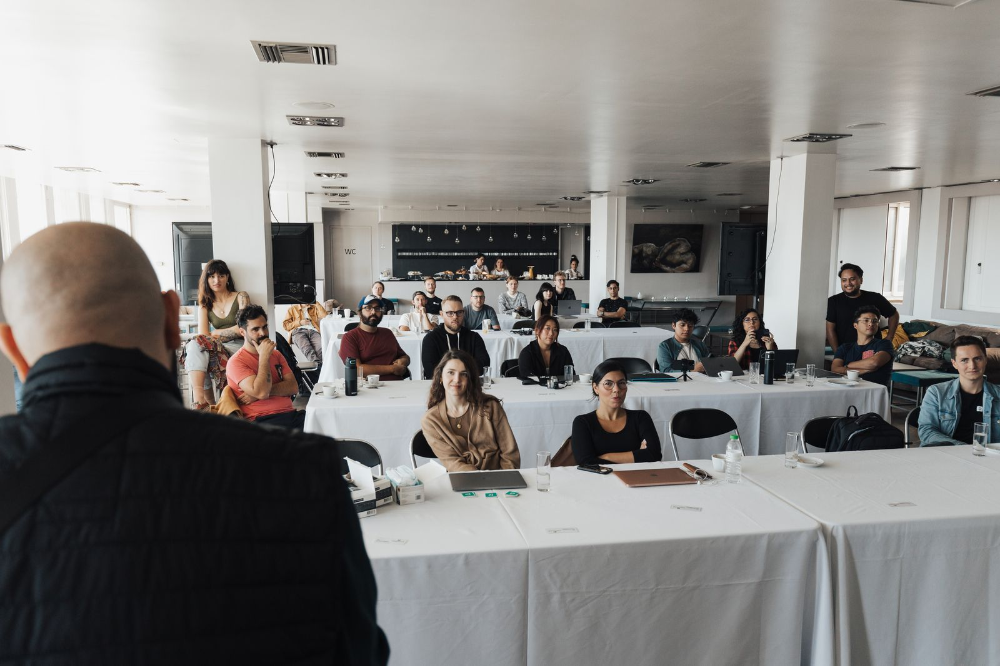
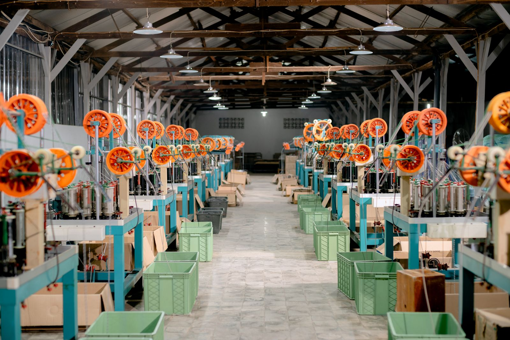

让每一家志在增长的企业，都有一支懂经营的 AI 团队
生命周期六维 + 战略能力八域，结论可追溯、动作可验收
让年度计划和月度经营会真正跑起来
扫码 20 分钟，看清谁能接班、谁要培养
报告、提案、表格与自媒体内容，一站生成
把资深顾问的战略诊断方法，用 AI 变成可复制、可验证的产品，帮助中型企业与上市公司把增长变成一套可执行的方法

企业分析报告 · 行业经营基准 · 管理实践（样例栏目）
